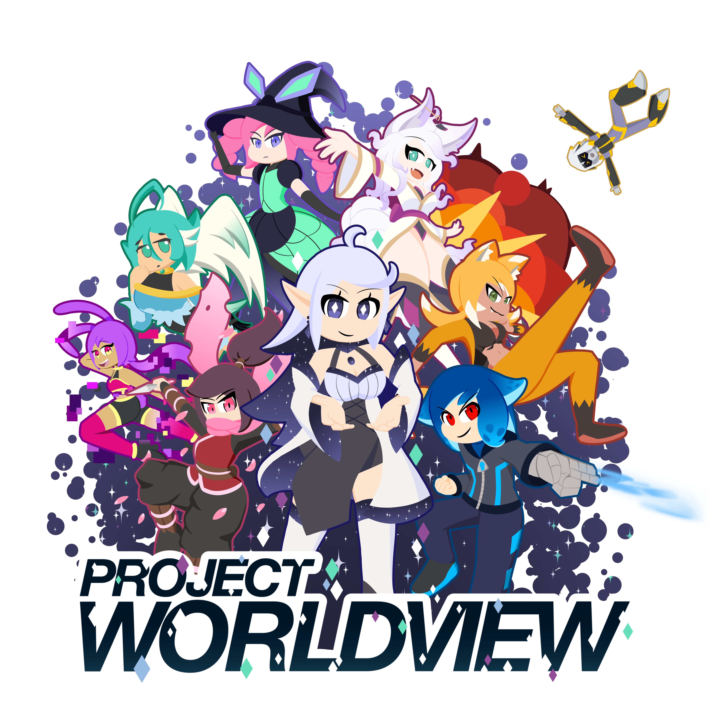

While the universe may seem to go on for near infinity, that is but a speck of all of reality. Endless universes coexist side by side, yet all completely unaware of one another. Many near indistinguishable from one another, yet unimaginably more that are inconceivable compared to the next. While crossovers with each other are few and far between, with eons usually passing between a natural occurrence, there rests a place in the gaps between the infinite worlds. The Worldview Observatory, found somewhere between Space-Time itself, a place rich with ether, where the infinite worlds can be observed and reached out to by its sole inhabitant and guardian, Elyss. Alone for an eternity looking out into the infinite beyond, it was a fateful encounter that set herself and Worldview on its current path. Today, a small but growing group of people from all different worlds now call Worldview home, each with their own stories and fateful encounters.
Ether is written as a subatomic particle that allows for the movement of electrons and thus allows for the fabric of space-time itself. It’s also able to react to a strong enough will of sentences, and be used to manipulate the world with those that have a body and mind evolved to resonate with it. Ether itself can also be used to manipulate a will likewise, such as bounding one to an object or to the ether itself in the right circumstances, or temporarily altering a will itself.
The Worldview Observatory itself is constantly shifting and altering, as the form it takes is altered and grows by the will of those who call it home. Paths can loop on infinitely, and time can flow at different paces depending on the area, as space-time itself is irregular there. At the heart of the Worldview Observatory sits the Observatory itself. Once the sole spot in Worldview is a large blank room with a large orb floating in its center. With this orb, Elyss observed the infinite worlds as they projected them onto the room, making one feel like they were actually there. With the orb and the core in her chest, she’s able to create a beam of line to connect the 2 places together, though this is something that never crossed her mind till that fateful encounter.
Originally a growing cluster of characters created out of boredom with no story or connections between them, It was playing a mobile game called World Flipper, a game where a group of people travel from world to world from a hub world that connects them that inspired the base concept for Project Worldview. While I have no grand ideas for a massive story with arcs and developments, Project Worldview was more meant as a way to have them all coexist in a unique setting that can offer near-infinite possibilities, while still bound by some basic rules the world follows, such as a magic system in ether. While I have yet to draw up designs for Worldview, the place pulls many ideas from the Crystal Temple for Steven Universe, with unique and defined rooms found in a greater liminal space. The Observatory itself is also based on Steven Universe, with the room being based on the mapping room in the moonbase, and the warping system behaving like a warp pad. Something Else to note is that all the artwork featured on this site was created by me unless stated otherwise.